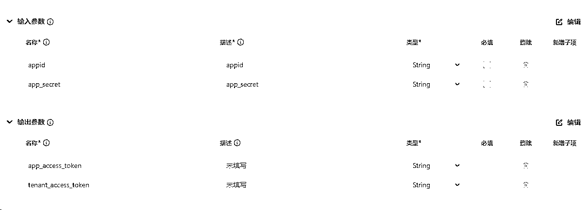
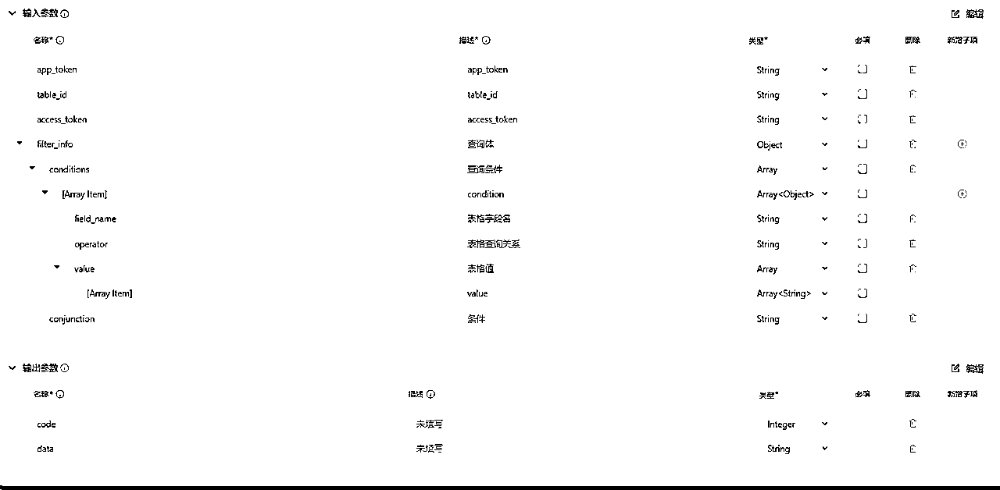
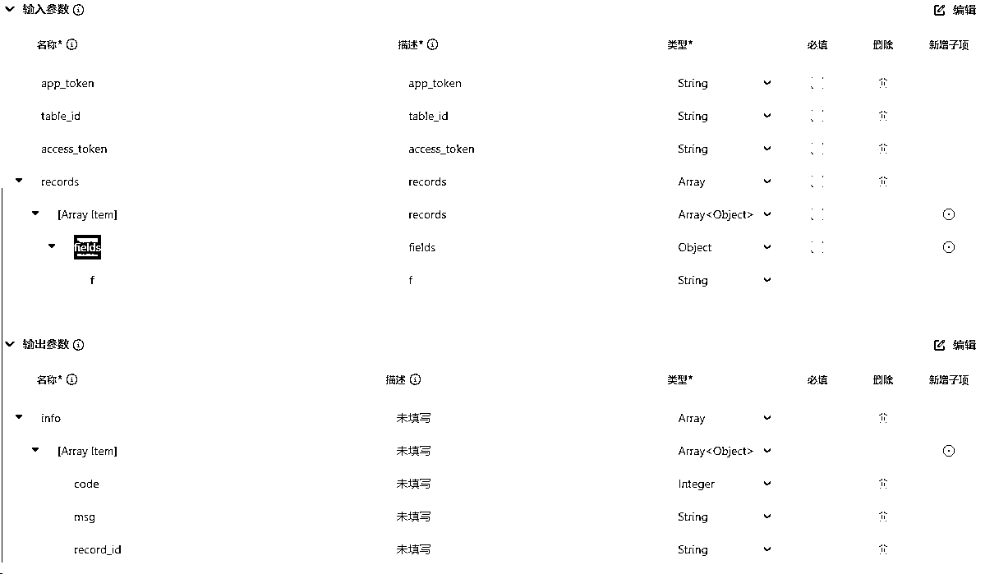
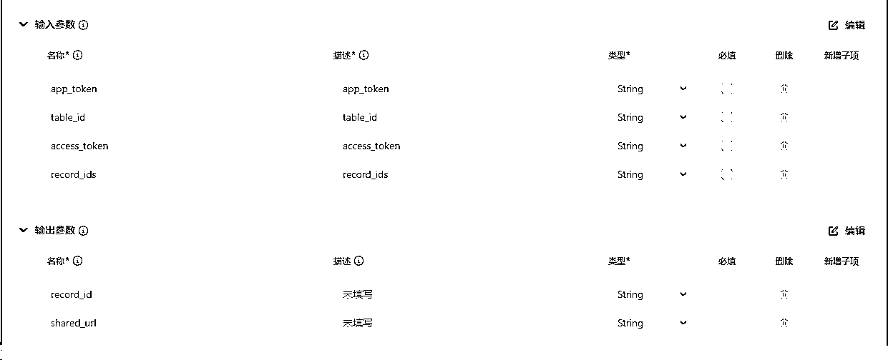
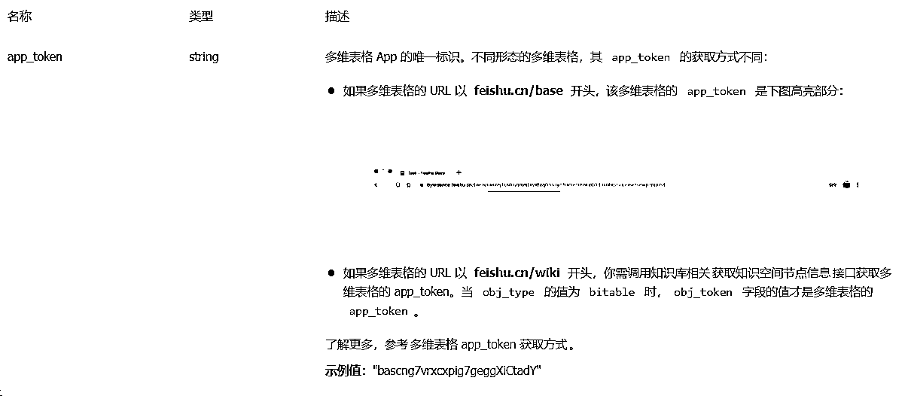
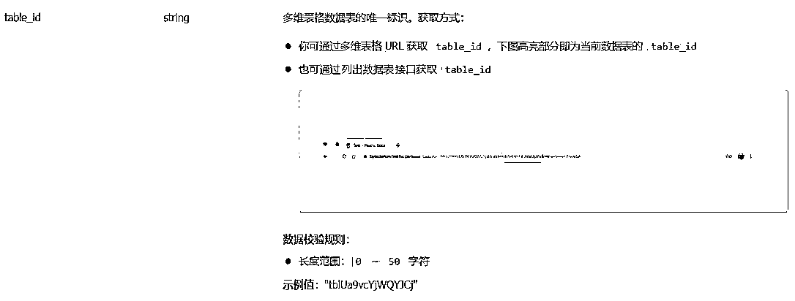
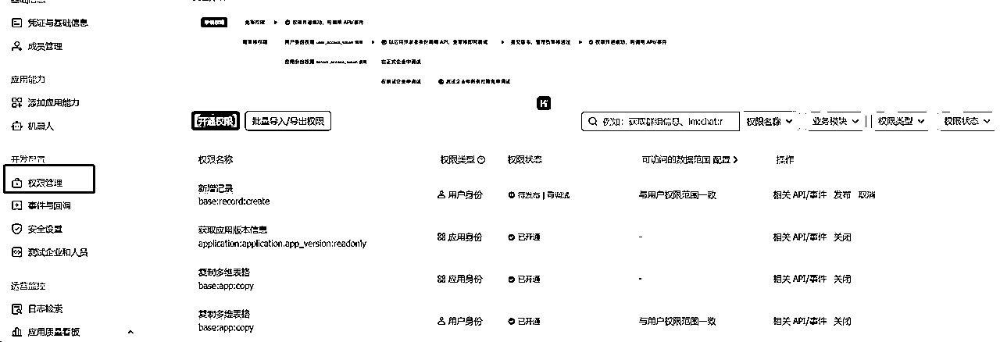
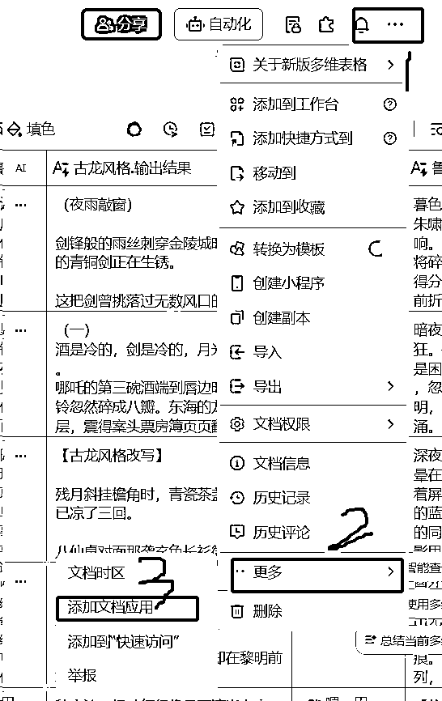

来源：https://iy8tus37tl.feishu.cn/docx/NGcZdQHb2oQIWhxuU1Tcps9Unmh
24年下半年，航海增加了关于扣子智能体，但是当时事情比较多，没有报上。自己也是在私下尝试下，感觉确实能够提升效率，但是没有找到一个很明确的变现方式。在刷风向标的时候无意中看到有圈友分享的关于coze变现的风向标：https://t.zsxq.com/CxKE5，感到真的是万物皆可咸鱼。想到自己作为产品经理，逻辑架构还是可以的，虽然没有是代码小白，但是完全可以借助大模型完成代码开发，至此踏上了智能体开发之路。
刚开始做的时候，因为完全没有经验，只是敢接很小很简单的单子，稍微复杂一点的不敢接；而且报价真的很低，真的是超级廉价牛马！！！当时完美就是奔着边做边学的思路去的。
很多单子也是从其他AI公司接的外包单子，但是当最初的小需求完成之后，客户会有后续的2.0，3.0的需求，智能体的价格也是随之涨上来的。
2000+的智能体订单最初是来自一个200的单子，当时客户的需求是做一个财务贴现报价的智能体，给的需求也相对比较简单。但是中间一直在改需求，中间花了近一个月一直在来来回回改需求，改流程，，，甚至一度想要放弃。。但是想着前期只给了100的定金，花了这么多精力，还有100没收回来，不甘心，就继续撑着。
当时的实现思路是这样的：
1、文字消息，通过大模型进行提取整理；
图片消息，将OCR之后的文本让大模型进行总结（当时还没有视觉模型）
2、实时知识库：考虑到客户会随时调整知识库的利率，希望调整后，报价可以实时抓到最新的报价信息，所以用的飞书；
3、结果计算：纯代码部分
4、结果记录：直接记录在飞书
大概近一个月左右，客户暂时没有太大问题了（而且AI公司也知道，正常订单，不会这么久），就趁机找AI公司先结算就跑路了，想的是可算结算了，后续有问题直接找AI公司吧。
但是过了3天，客户通过项目群找过来，希望继续合作，可以做后续2.0，3.0的开发，详细沟通了后续的需求，报了1500的价格（当时有弥补1.0的意思），客户竟然没有犹豫，直接打款了。。当时心里一阵感动，趁着周末，一个周末搞定大框架，后续就是修修补补
coze端经过一个月的磨练，很熟悉，快速搞定了，但是对接微信遇到问题，最初用的是COW，但是COW默认的是文字消息，不支持图片消息，需要二次开发插件；所以找了很久的个人微信的机器人项目（最后用的wechatferry）。
部署又遇到问题，一直提示授权问题（工作流中，用到的飞书官方插件，一直需要提示授权），后来找coze工程师，解决思路是需要创建应用，通过应用调飞书多维表格查询和写入，但是coze商店中没有相关的插件，无奈只能继续自学飞书插件，自建插件（当时也到咸鱼找过，单纯开发一个飞书插件最高的竟然要价600，最低的100，无奈囊中羞涩），还好最后顺利上线。
后面陆续增加了返回飞书记录的查看链接，多金融机构报价等等需求，就顺手很多了，基本很快就可以搞定。
今年客户在2.0的基础上，继续做3.0的需求：
1、收集员工在同行群中，同行的报价信息和语料；
2、。。。
3、。。。
工作流和自建的飞书插件如下，分享给小伙伴
工作流与上面画布的流程图是一致的，代码部分涉及公司业务
主要涉及飞书多维表格几个插件：
1、获取飞书应用access_token
def handler(args: Args[Input])->Output:
def get_app_access_token(app_id, app_secret):
"""
通过给定的应用ID和应用密钥获取app_access_token以及tenant_access_token
参数:
app_id (str): 应用唯一标识，创建应用后获得
app_secret (str): 应用秘钥，创建应用后获得
返回:
dict: 返回包含 'app_access_token' 和 'tenant_access_token' 键值对的字典，如果请求失败，字典中的 'msg' 键对应错误描述信息
"""
url = "https://open.feishu.cn/open-apis/auth/v3/app_access_token/internal"
headers = {
"Content-Type": "application/json; charset=utf-8"
}
data = {
"app_id": app_id,
"app_secret": app_secret
}
try:
response = requests.post(url, headers=headers, json=data)
response.raise_for_status()
result_json = response.json()
return {
"app_access_token": result_json.get("app_access_token"),
"tenant_access_token": result_json.get("tenant_access_token")
}
except requests.RequestException as e:
return {"msg": str(e)}
result_token = get_app_access_token(args.input.appid,args.input.app_secret)
app_access_token = result_token.get("app_access_token")
tenant_access_token = result_token.get("tenant_access_token")
return {"app_access_token": app_access_token,
"tenant_access_token":tenant_access_token
}

应用的appid和appsecret在飞书应用后台可查
2、查询飞书多维表格记录
def to_serializable(data):
if isinstance(data, dict):
return {k: to_serializable(v) for k, v in data.items()}
elif isinstance(data, list):
return [to_serializable(item) for item in data]
elif hasattr(data, '__dict__'):
return to_serializable(data.__dict__)
else:
return data
def handler(args: Args[Input]) -> Output:
def query_feishu_bitable_records(app_token, table_id, access_token, user_id_type="open_id", page_token=None,
page_size=20, view_id=None, field_names=None, sort=None, filter_info=None,
automatic_fields=False):
url = f"https://open.feishu.cn/open-apis/bitable/v1/apps/{app_token}/tables/{table_id}/records/search"
headers = {
"Authorization": f"Bearer {access_token}",
"Content-Type": "application/json; charset=utf-8"
}
# 构建请求数据
data = {
"user_id_type": user_id_type,
"page_token": page_token,
"page_size": page_size,
"view_id": view_id,
"field_names": field_names,
"sort": sort,
"filter": filter_info,
"automatic_fields": automatic_fields
}
data = {k: v for k, v in data.items() if v is not None}
try:
serializable_data = to_serializable(data)
response = requests.post(url, headers=headers, json=serializable_data)
response.raise_for_status()
return response.json()
except requests.RequestException as e:
return {"code": -1, "data": str(e)}
result = query_feishu_bitable_records(
app_token=args.input.app_token,
table_id=args.input.table_id,
access_token=args.input.access_token,
filter_info=args.input.filter_info
)
code = result['code']
data = str(result['data'])
return {"code": code,
"data": data}

3、批量新增多维表格记录
def handler(args: Args[Input]) -> Output:
def add_feishu_bitable_record_batch(app_token, table_id, access_token, records=None):
url = f"https://open.feishu.cn/open-apis/bitable/v1/apps/{app_token}/tables/{table_id}/records/batch_create"
headers = {
"Authorization": f"Bearer {access_token}",
"Content-Type": "application/json; charset=utf-8"
}
data = {
"user_id_type": "open_id",
"client_token": None,
"ignore_consistency_check": False,
"records": records
}
try:
response = requests.post(url, headers=headers, json=data)
response.raise_for_status()
return response.json()
except requests.RequestException as e:
return {"code": -1, "msg": str(e)}
# 定义一个函数用于将 CustomNamespace 对象转换为字典
def namespace_to_dict(obj):
if hasattr(obj, '__dict__'):
result = {}
for key, value in obj.__dict__.items():
if hasattr(value, '__dict__'):
result[key] = namespace_to_dict(value)
else:
result[key] = value
return result
return obj
# 将 args.input 中的对象转换为可序列化的字典
app_token = namespace_to_dict(args.input.app_token)
table_id = namespace_to_dict(args.input.table_id)
access_token = namespace_to_dict(args.input.access_token)
records = [namespace_to_dict(record) for record in args.input.records]
result = add_feishu_bitable_record_batch(
app_token=app_token,
table_id=table_id,
access_token=access_token,
records=records
)
info = []
if "data" in result and "records" in result["data"]:
for item in result["data"]["records"]:
code = result.get("code", -1)
msg = result.get("msg", "")
record_id = item.get("record_id", "")
info.append({
"code": code,
"msg": msg,
"record_id": record_id
})
else:
code = result.get("code", -1)
msg = result.get("msg", "")
info.append({
"code": code,
"msg": msg,
"record_id": ""
})
return {"info": info}

4、获取飞书多维表格单条记录分享链接
def handler(args: Args[Input])->Output:
def batch_get_records(app_token, table_id, access_token, record_ids):
# 构建请求 URL
url = f"https://open.feishu.cn/open-apis/bitable/v1/apps/{app_token}/tables/{table_id}/records/batch_get"
# 构建请求头
headers = {
"Authorization": f"Bearer {access_token}",
"Content-Type": "application/json; charset=utf-8"
}
# 构建请求体
data = {
"record_ids": [record_ids],
"user_id_type": "open_id",
"with_shared_url": True,
"automatic_fields": False
}
try:
# 发送 POST 请求
response = requests.post(url, headers=headers, json=data)
# 检查响应状态码
response.raise_for_status()
# 返回响应的 JSON 数据
return response.json()
except requests.RequestException as e:
# 若请求出错，打印错误信息
print(f"请求出错: {e}")
return None
result = batch_get_records(
app_token=args.input.app_token,
table_id=args.input.table_id,
access_token=args.input.access_token,
record_ids=args.input.record_ids
)
record_id = result["data"]["records"][0]["record_id"]
shared_url = result["data"]["records"][0]["shared_url"]
return {"record_id": record_id,
"shared_url":shared_url}

2、3、4的apptoken和table直接取飞书链接的值


accesstoken取插件1的返回值
需要注意
1、要给应用添加云文档的编辑权限（应用管理页面-权限管理，添加云文档和多维表格，不确定可以全部开通
2、要给多维表格添加应用的管理权限（飞书多维表格—右上角三个点—更多—添加文档应用—选择创建的应用，给予“可管理”权限


中间陆陆续续还有其他智能体的订单，比如微信公众号自动发布、数据采集-清洗、工程项目报价等等，借助AI工具进步还是挺快的。
2025继续加油！！